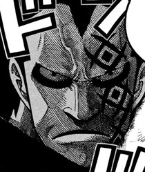

Forums galactiques > Assemblée Galactique : diplomatie officielle > DragonFire... sa présentation...
Pages : 1
| DragonFire Respect diplomatique : 2  23/01 ETU 19:37 | Score : 2 Détails Un homme, tout vétu de noir, fît son aparition...
On ne distinguait ni sa couleur de peau, ni son visage, juste des yeux bleu éblouissant... L'homme approcha du pupitre, et commenca à parler... Bien le bonjour à vous tous ici présent... Je me présente à vous... Je suis l'Amiral Garp, chef des armées de mon maitre, qui m'as demandé de venir faire sa présentation ici même, car il est très occupé et ne peux se déplacé maintenant... Mais bientôt, il viendra lui même... Voici donc sa description: Surnommé le révolutionnaire, Dragon est un personnage particulièrement mystérieux. Le véritable nom de Dragon est "Monkey D Dragon" Il porte une longue cape à capuchon qui ne laisse paraître qu'une petite partie de son visage. Visage qui est orné d'un tatouage tout aussi énigmatique... Tout ce que l'on sait sur lui c'est que le Gouvernement Mondial le recherche depuis des années car ses pensées sont dangereuses (?). L'une des dernières répliques de Dragon est à son image, mystérieuse et obscure : "Le monde entier attend notre réponse." Il n'est autre que mon père alors même que je n'était pas au courant avant que mon grand père ne m'en parle. D'ailleurs j'ignorait même que j'avait un père! Dragon est le chef d'un mouvement qu'on nomme l'armée des révolutionnaires dont le but est de renverser le Gouvernement Mondial de notre planètes: L'empire Des Dragons. Il a provoqué des révolutions dans de nombreux royaumes et a conduit beaucoup de pays à la destruction. En raison de cela le Gouvernement Mondial a fait de Dragon le criminel le plus recherché au monde. Sa renommée est telle, que la simple évocation de son nom fait frémir la plupart des gens! Quelles sont les motivations de Dragon ? Pour le moment nous l'ignorons. Tout ce que nous savons c'est qu'il se dresse contre le Gouvernement Mondial depuis des années et qu'il est considéré comme la pire menace existante contre l'ordre mondial. Bientôt, il obtiendra le pouvoir de notre planètes... Nous allons vous communiquez davantages d'informations sous peu... Sur ce, pardonnez moi, mais je dois me retirer... J'ai encore beaucoup de travaux à accomplir... Je ne rajouterai qu'une chose, nous ne cherchons pas à déclencher des conflits pour le moment, et surment pas à l'encontre du gouvernement de la galaxie... Je me retire donc... Il disparu dans un nuage de fumée bleu, visiblement sa couleur préféré était le bleu... |
Pages : 1
Forums galactiques > Assemblée Galactique : diplomatie officielle > DragonFire... sa présentation...